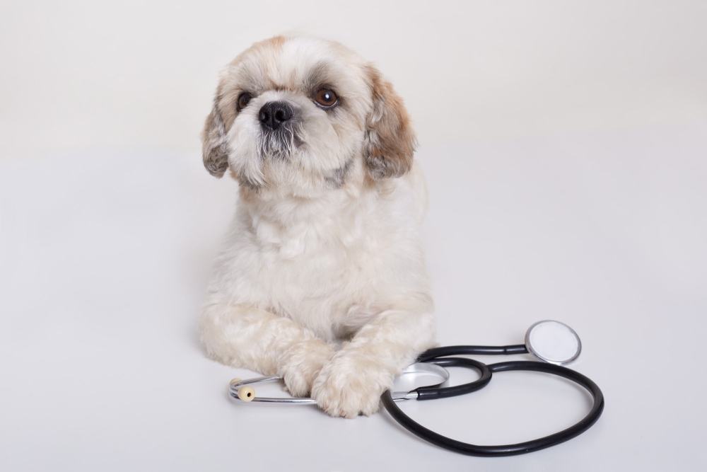

Clínica
Veterinária

Quem Somos
Nossa clínica dedica-se a cuidar da saúde dos animais. Trabalhamos com excelência, humanização e atendimento diferenciado, em constante modernização e na contribuição do aperfeiçoamento de nossos profissionais.
Missão
Oferecer atendimento diferenciado, cuidando com carinho e dedicação visando o bem estar e saúde dos animais.
Visão
Ser referência e exemplo de qualidade quando se diz respeito a saúde e cuidado animal.
Valores
Ser modelo de referência no atendimento veterinário, através da excelência de serviços prestados.